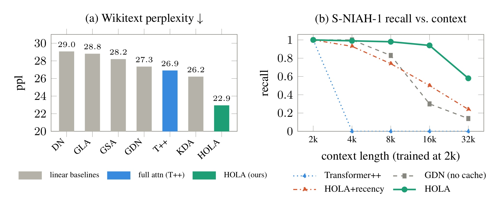
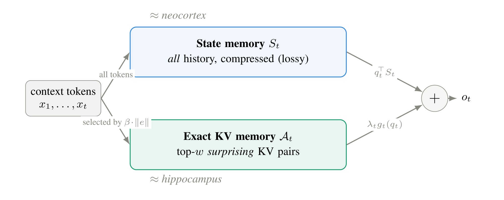
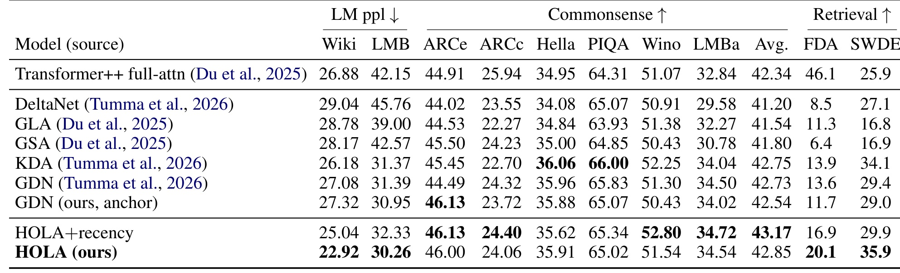
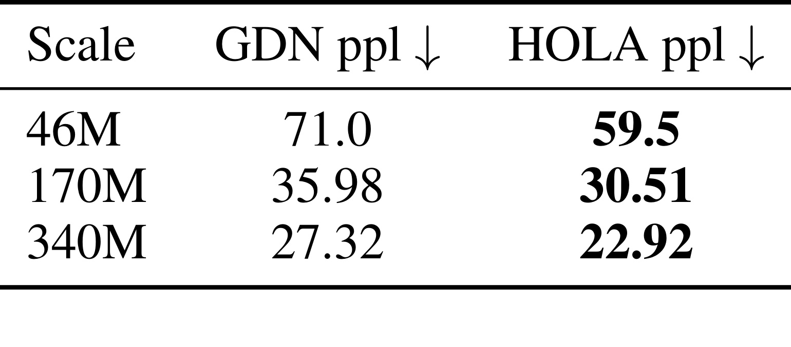
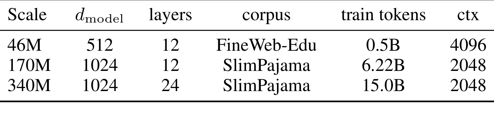
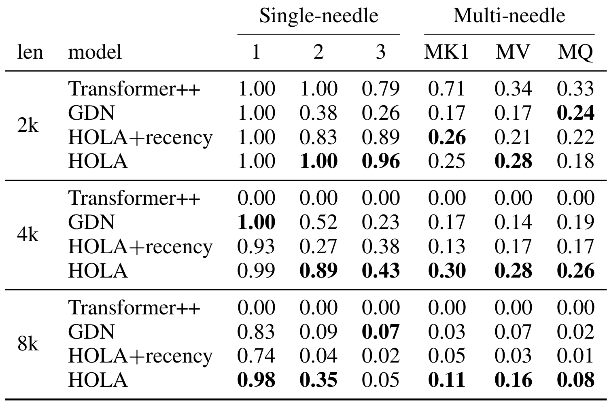
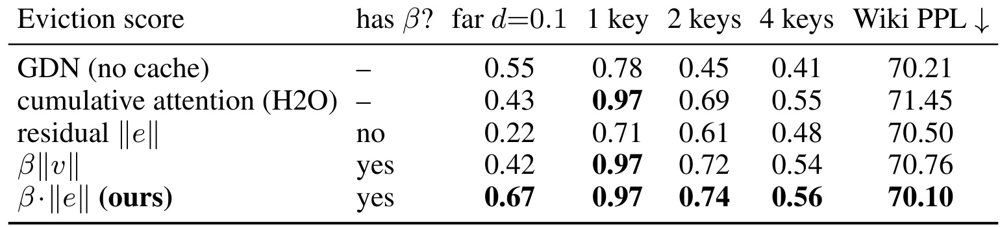
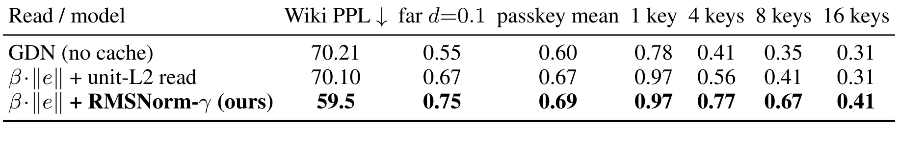

A Hippocampus for Linear Attention: An Exact Memory for What the Recurrent State Forgets / 给线性注意力补一个海马体式精确记忆 HOLA
这篇论文由上海财经大学 Wanyun Cui 完成，2026-07-02 公开在 arXiv:2607.02303。它讨论的是线性注意力和状态空间语言模型的一个老问题：模型用固定大小的 recurrent state 压缩全部前缀，推理时内存几乎不随上下文增长，但这种压缩不是精确记忆。HOLA 的主张不是回到完整 softmax attention，而是在 Gated DeltaNet 这类 delta-rule backbone 内部增加一个有容量上限的 exact KV cache，让 state 继续负责可线性压缩的结构，让 cache 保存 state 不应被迫吸收的一次性关联。代码/项目页状态：本轮未在 arXiv 摘要或首页核验到独立代码链接。
<strong style="color:#c2410c">线性注意力和状态空间语言模型把前缀压缩进固定 recurrent state，换来 O(1) memory，却会丢失精确记忆：当许多 key-value 关联竞争同一个有限状态时，早期事实会被覆盖，needle recall 会随上下文变长而下降。HOLA 要回答的是，能否保留线性注意力的低成本，同时把那些 state 最容易忘掉的精确关联单独存下来。</strong>
1. 背景和问题
线性注意力、DeltaNet、Gated DeltaNet 和一批状态空间模型的共同工程诱惑很明确：它们不需要像 softmax attention 那样为每个 token 保留不断增长的 KV cache，而是把历史压缩到一个固定大小的 recurrent state。这样做在长序列推理时很有吸引力，因为内存不再随上下文长度线性增长，计算也更容易做成流式。但论文强调，固定大小 state 本质上是一个有容量上限的关联记忆。如果历史里只有少量、方向相互区分的 key-value 关系，state 可以像一个运行中的线性回归器一样给出不错的读出；一旦不同事实在相似 key 方向上反复写入，新写入就会沿共享方向覆盖旧写入，远处事实无法再被精确恢复。
作者用 Complementary Learning Systems 的类比来组织这个问题。人脑里海马体偏向快速、一次性、情景化的记忆，新皮层偏向慢速、可泛化的结构抽取。把这个类比放到模型里，GDN 这类 recurrent state 更像新皮层：它能把重复结构、统计规律和局部可预测模式压成低成本状态，但它不是为“某个很远的 passkey 必须被原样召回”设计的。softmax attention 则是另一端，它保存每个 token 的 KV，理论上可以做精确回看，却付出 O(T) memory 与更高计算代价。HOLA 的切入点就是在两者之间加一个小而精确的情景记忆：state 不必承担所有事实，cache 也不必保存所有 token。
这篇论文的背景价值在于，它没有把“加一个 cache”讲成普通工程 patch，而是追问 cache 应该存什么。很多 hybrid efficient LM 选择最近窗口，逻辑是最近 token 可能最有用；但 needle-in-a-haystack 这类任务故意把关键事实放在很远处，最近窗口一旦滑过，远处 token 就再次只能被 state 压缩。HOLA 的判断是：如果 exact memory 的容量有限，它应优先保存 state 最难压缩、同时模型确实决定写入的 token，而不是机械保存最近 token。这个标准来自 delta-rule 本身，所以它不需要额外学习一个 eviction module。

Figure 1 把这篇论文的两条主线压在一起。左侧 Wikitext perplexity 不是只和 recency cache 比，而是把 DN、GLA、GSA、GDN、KDA、full-attention Transformer++ 和 HOLA 放到同一张图里；HOLA 的柱子是 22.9，低于 GDN 的 27.3，也低于 full-attention Transformer++ 的 26.9。这里不能简单理解成“小 cache 超过 full attention”这类夸张结论，因为训练配方、架构细节和任务口径都要一起看；更稳妥的读法是，同骨干 GDN 到 HOLA 的下降足够大，说明 exact cache 没有只改善 recall，也改变了语言建模困惑度。右侧 S-NIAH-1 recall 曲线更贴近问题定义：GDN 随 context 从 2k 扩到 32k 明显衰减，HOLA+recency 也会掉，而 HOLA 在 32k 仍保持更高 recall。这个差异正好说明“最近窗口”不能替代“重要且远的精确记忆”。
从大模型系统角度看，这类设计对应一个很现实的冲突：线上推理希望长上下文、低显存、低延迟，但产品任务又常常要求精确取回某个长文档、日志、代码片段或用户历史中的具体事实。纯压缩 state 可以让服务成本好看，却容易在精确拷贝、passkey、长距离引用上出错；全量 attention 可以缓解这个问题，但显存和延迟压力大。HOLA 的贡献不在于宣称一个固定 cache 就能替代所有注意力，而在于把 state 的“遗忘信号”显式暴露出来，再用这个信号决定哪些 KV 对应该绕过压缩通道。
2. 方法
2.1 从 delta rule 看到 recurrent state 遗忘什么
论文从 DeltaNet 的状态更新式开始，而不是直接定义 cache。令第 t 个 token 的 query、key、value 分别是 \(q_t,k_t,v_t\)，其中 \(q_t,k_t\) 被 L2 归一化，\(\beta_t\in[0,1]\) 是写入强度，\(S_{t-1}\) 是上一时刻的状态矩阵。delta rule 先用旧状态预测当前 key 对应的 value，再把预测残差写回 state：
符号解释：\(S_t\) 是更新后的 recurrent state；\(e_t\) 是 state 对当前 value 没能解释的 residual；\(\beta_t\) 控制这次 residual 是否真的写入；\(o_t^{\mathrm{state}}\) 是只依赖压缩 state 的读出。这个公式的关键是 residual write，而不是把 \(v_t\) 原样写入。重复出现、state 已能预测的内容会产生较小 residual，写入量自然变小；真正新颖或 state 难以解释的内容会产生较大 residual。
这个 state 仍然是固定大小矩阵，秩和维度都有上限。<strong style="color:#2563eb">HOLA 把 \(e_t\) 从普通训练中间量提升为记忆选择信号：如果某个 token 的 residual 很大，而且 \(\beta_t\) 也大，说明它既让 state 意外，又被模型实际提交写入。</strong> 反过来，如果 residual 小，说明 state 已经能压缩这个关联；如果 residual 大但 \(\beta_t\) 小，说明模型并不愿把这个差异强写入 state。这个判断为后面的 exact cache 提供了一个很干净的接口：cache 不必再猜哪个 token 重要，它可以直接读 delta-rule 的写入痕迹。
2.2 Semiparametric TMR：state 负责可压缩结构，cache 负责精确 KV
为了把 GDN、full attention 和 HOLA 放在一个框架里，作者定义了 test-time memory regression。给定当前可见的前缀观察 \(D_t=\{(k_i,v_i)\}_{i\le t}\)，一个记忆机制就是在测试时不断写入 memory，再用 query 从 memory 中估计一个上下文相关映射。只用 recurrent state 的 GDN 可以写成：
符号解释：\(\hat f_{\mathrm{state},t}\) 是测试时由上下文更新出的线性估计器，不是训练后固定不变的参数函数。它便宜、可流式，但只适合表示可压缩的 key-value 结构。HOLA 的半参数形式把 memory 拆成两部分：固定大小状态 \(S_t\)，以及 exact KV 集合 \(A_t\)。读出写成：
符号解释：\(A_t\) 是 cache 中保留的精确 KV 对；\(g_t(q_t)\) 是基于这些精确 KV 的非参数读出；\(\lambda_t\) 是读侧混合系数；\(q_t^\top S_t\) 仍然保留 GDN 的压缩估计。这个式子解释了 HOLA 为什么叫 semiparametric：state 像参数化的低秩回归器，cache 像非参数支持点集合。full attention 也可以被看成极端版本：不用 state，直接把全部 \(D_t\) 都当成 exact KV，然后做 kernel 估计：
符号解释：\(d\) 是 head 维度；分子是 query 与某个 key 的相似度指数；分母对全部前缀 token 归一化；\(v_i\) 是被加权返回的 value。full attention 精确保留全部 token，所以 exact recall 强，但 KV 集合随上下文长度增长。HOLA 则只保留一个 bounded \(A_t\)，目标是在内存预算内补 state 最容易漏掉的部分。

Figure 2 是方法章最核心的图。左边所有 context tokens 都进入上方 state memory，表示每个 token 仍然参与 GDN 的 recurrent update；这一路被标成 neocortex，强调它是压缩、泛化、lossy 的记忆。下方 exact KV memory 只接收由 \(\beta\cdot\|e\|\) 选择出的 top-w surprising KV pairs，被类比成 hippocampus。右侧输出处有两条信号：\(q_t^\top S_t\) 是 state 读出，\(\lambda_t g_t(q_t)\) 是 cache 读出，二者相加得到 \(o_t\)。这张图也说明 HOLA 不是在每层再加一个完整 attention，而是在每层保留一个有界 KV 子集，并把它作为对 recurrent state 的非参数校正。
2.3 写入：用 beta times norm e 选择真正改变 state 的 token
有了 \(A_t\) 之后，最重要的问题是选择规则。HOLA 直接把 delta-rule 写入量定义成 rank-1 update：
符号解释：\(\Delta_t\) 是 token t 对 state 的完整影响；\(k_t e_t^\top\) 是由 key 方向和 residual value 方向形成的外积；\(\beta_t\) 是模型给这次写入分配的强度。因为 \(k_t\) 已经 L2 归一化，rank-1 矩阵的 Frobenius norm 可以化简成一个标量：
符号解释：\(m_t\) 是 cache eviction score；\(\|\Delta_t\|_F\) 衡量这个 token 实际改变 state 的幅度；\(\|e_t\|\) 是 state 无法预测的残差大小；\(\beta_t\) 保证只把模型真正愿意提交的 residual 视为重要。<strong style="color:#2563eb">HOLA 的写入规则就是保留历史中 \(m_t\) 最大的 top-w 个 exact KV 对，默认 \(w=64\)。</strong> 这比 recency 更贴近问题本身：远处的关键 token 只要在写入时足够 surprising，就不会因为时间窗口滑动而被立即丢弃。
这个设计还有一个训练/推理一致性优点。\(m_t\) 在 token 被写入时就确定，不依赖未来 query，也不需要一个额外 learned eviction network。实现上可以在线维护 top-w，也可以在块处理时选择，语义一致。论文还提到实际可见集合 \(V_t\) 除 persistent cache 外，还包括当前 processing block 的 causal tokens 和一个 null sink；这些是块处理和稳定性所需的有界 bookkeeping，不改变 persistent exact memory 由 \(\beta_t\|e_t\|\) 选择的核心逻辑。
2.4 读取与实例化：decoupled RMSNorm-gamma 让 exact KV 变成检索而不是平均
只保存 exact KV 还不够。如果 cache read 仍然复用 GDN/DeltaNet 为 state update 准备的 unit-L2 \(q,k\)，softmax logit 的范围会很小。论文给出的直觉是，learned temperature 约 6.6、head dimension 下的有效 logit 只有大约 \(0.83\cos\)，即使 query 与某个 key 很匹配，在 \(w=64\) 的 cache 里也只能拿到很小概率质量，结果更像平均一堆 value，而不是检索一个 exact value。HOLA 因此在 cache path 上单独使用 Qwen3 风格的 RMSNorm-gamma：
符号解释：\(V_t\) 是当前可读的 bounded KV 集合；\(\tilde q,\tilde k\) 是只给 cache read 使用的 RMSNorm-gamma 后 query/key；\(d\) 是 head dimension；\(o_t^{\mathrm{cache}}\) 是 exact KV 分支的输出。RMSNorm-gamma 把 cache path 的 \(q,k\) norm 维持在接近 \(\sqrt d\) 的尺度，使 logit 接近 \(\sqrt d\cos\)，从而让 softmax 更尖锐，更接近 top item retrieval。
这个 read path 必须与 state update path 解耦。state update 依赖 unit-L2 key 保证 \(I-\beta kk^\top\) 的特征值在稳定范围内；如果把 \(\sqrt d\) 尺度的 key 直接喂给 state update，更新算子会可能发散。论文实例化时选择 Gated DeltaNet：GDN 有数据依赖 decay gate \(\alpha_t\)，残差变成 \(e_t=v_t-\alpha_t k_t^\top S_{t-1}\)，但 \(\beta_t\|e_t\|\) 仍然可用。参数开销很小，340M 设置下 cache-specific trainable scalars 约 12,480，不到全模型 0.004%；cache 本身是 inference state，论文估算 340M、24 层、4 头、head dim 256、\(w+C\approx320\) 时 bf16 解码存储约 31 MB，峰值 GPU allocation 与 GDN 接近。
3. 实验结果
3.1 主结果：困惑度和检索提升明显，常识任务不是主要分离点

Table 1 是论文最重要的结果表。最稳妥的比较是 HOLA 与同骨干 GDN anchor：Wikitext perplexity 从 27.32 降到 22.92，LAMBADA perplexity 从 30.95 降到 30.26；这说明 cache 不是只在专门的 needle benchmark 上起作用，也改变了语言建模损失。和其他 sub-quadratic baseline 比，HOLA 的 Wikitext 也低于 KDA 的 26.18。和 full-attention Transformer++ 比时要谨慎，因为它是不同 cost class，但表中 HOLA 的 22.92 确实低于 Transformer++ 的 26.88。常识任务上 HOLA 不构成压倒优势，六任务平均 42.85 与 GDN、KDA、HOLA+recency 的差距都很小，作者也明确说 commonsense 不是 cache 机制分离模型的主要场景。检索列更符合方法预期：FDA 从同骨干 GDN 的 11.7 提到 20.1，SWDE 从 29.0 提到 35.9，显示 exact KV 对对 in-context extraction 更有直接帮助。
这张表还有一个容易忽略的控制项：HOLA+recency 用同样的 cache、chunk、sharpened read、gate 和 kernel，只把 eviction signal 换成位置最近。它在 Wikitext 上为 25.04，优于 GDN 但落后 HOLA；在 FDA/SWDE 上也不如 HOLA。这个结果支持“有 exact cache”不是全部答案，cache 保存哪些 token 才是关键。对工程实践而言，这意味着如果只在 efficient backbone 旁边加一个最近窗口，确实可能改善局部上下文，但不能指望它自动解决远距离事实召回。
3.2 尺度一致性：46M、170M、340M 都有同向收益

Table 2 把同骨干 GDN 与 HOLA 放到 46M、170M、340M 三个规模上比较。三个规模的绝对 perplexity 不可直接横比，因为训练语料、token 数、上下文设置不完全相同；但每一行内部的 GDN 与 HOLA 是 matched backbone，所以可以看相对变化。46M 从 71.0 到 59.5，170M 从 35.98 到 30.51，340M 从 27.32 到 22.92，下降幅度都在大约 15% 到 16% 区间。这一点很重要，因为如果 cache 只在小模型上有效，可能只是小模型 state capacity 太弱；如果只在大模型上有效，也可能依赖规模带来的 query/key 分离。现在三档都同向，说明 \(\beta_t\|e_t\|\) 和 sharpened cache read 是比较稳定的机制信号。

Table 6 补齐了 Table 2 的实验口径。46M 使用 \(d_{\mathrm{model}}=512\)、12 层、FineWeb-Edu、0.5B train tokens、ctx 4096；170M 使用 \(d_{\mathrm{model}}=1024\)、12 层、SlimPajama、6.22B tokens、ctx 2048；340M 使用 \(d_{\mathrm{model}}=1024\)、24 层、SlimPajama、15B tokens、ctx 2048。这说明尺度表不是在一个完全等训练预算的横轴上做 scaling law，而是在每个规模内做同骨干替换。读 Table 2 时应把重点放在“每行内部 HOLA 是否优于同设置 GDN”，而不是把 46M、170M、340M 的绝对值当成纯粹模型大小曲线。
3.3 长上下文检索：HOLA 对远针任务更稳，但不是完美记忆

Table 3 展示 RULER 的 2k、4k、8k compact snapshot，列分成 single-needle 的 1/2/3 和 multi-needle 的 MK1、MV、MQ。2k 范围内 Transformer++ 作为 full-attention ceiling 很强，但在 4k 之后这个 RoPE checkpoint 全部跌到 0，论文不把它当作真正的 length-extrapolating baseline。HOLA 与 GDN、HOLA+recency 的比较更直接：在 4k 的 S-NIAH-2 上，HOLA 是 0.89，GDN 是 0.52，recency 是 0.27；在 8k 的 S-NIAH-1 上，HOLA 是 0.98，GDN 是 0.83，recency 是 0.74；multi-needle 任务上 HOLA 也常常更高，例如 4k MK1、MV、MQ 分别是 0.30、0.28、0.26。它不是所有 cell 都绝对领先，2k MK1 上 recency 0.26 略高于 HOLA 0.25，2k MQ 上 GDN 0.24 高于 HOLA 0.18；这提示 exact cache 的优势主要出现在远距离精确召回，而不是每个短上下文多事实设置都无条件更优。
结合 Figure 1 的 16k/32k S-NIAH-1 曲线，HOLA 的长上下文价值更清楚。32k 时 HOLA recall 约 0.58，HOLA+recency 约 0.24，GDN 约 0.14。这个数字不是满分，说明 bounded cache 不能保存所有可能被问到的 needle；但它相对 recency 与 no-cache 的差距说明，按 surprise 写入的 exact KV 能保留一部分远处关键事实。对长上下文 LLM 应用而言，这个结果更像“在低成本 recurrent backbone 上补回一部分精确检索能力”，而不是“无限上下文记忆已经解决”。
3.4 消融：写什么和怎么读都重要

Table 4 在 46M、flat read 设置下隔离 eviction signal。GDN no-cache 的 far depth 0.1 passkey accuracy 是 0.55；只用 cumulative attention 的 H2O 是 0.43；只用 residual \(\|e\|\) 甚至降到 0.22；\(\beta\|v\|\) 是 0.42；完整 \(\beta\|e\|\) 达到 0.67，并且在 1 key、2 keys、4 keys 上是 0.97、0.74、0.56，Wiki PPL 也是表中最低的 70.10。这个表说明 residual 本身不足以决定保留对象，因为 residual 大但模型写入强度低的 token 未必是 state 真的需要的支持点；\(\beta\) 本身也不足，因为 value norm 大不等于 state 没记住。二者相乘才对应“实际写入 state 的 residual 幅度”，也就是 HOLA 所说的 surprise。

Table 5 固定 eviction rule 为 \(\beta\|e\|\)，再看 read path。unit-L2 read 相对 GDN no-cache 的 far d=0.1 从 0.55 提到 0.67，1 key 从 0.78 到 0.97，但 Wiki PPL 几乎没变，4/8/16 keys 也只有 0.56、0.41、0.31。换成 RMSNorm-gamma 后，Wiki PPL 直接到 59.5，far d=0.1 到 0.75，4 keys 到 0.77，8 keys 到 0.67，16 keys 到 0.41。这个结果支撑方法章的直觉：exact KV 如果被均匀读出，只是另一个平均器；只有 cache path 的 q/k logit 尺度足够尖锐，exact pair 才能以检索方式发挥作用。
这两张消融表合起来看，HOLA 的核心不是“GDN 加缓存”这么简单，而是两个选择同时成立：写侧用 \(\beta_t\|e_t\|\) 选择 state 最难吸收的 token，读侧用 decoupled RMSNorm-gamma 把 exact KV 读成 sharp retrieval。任何一侧变弱都会让 cache 退化。recency 控制说明写侧错误会让远处 needle 滑出窗口；unit-L2 控制说明读侧错误会把 exact memory 变成 soft averaging。
4. 总结
4.1 我的判断
HOLA 最值得记住的点是它把 linear attention 的 recurrent state 当成一个 test-time estimator，而不是只把它当作某种高效 attention 替代品。这样一来，遗忘不是抽象缺陷，而是可以从 residual update 里读出的信号。<strong style="color:#2563eb">如果一个 token 对 state 的实际写入幅度很大，它就应该有更高资格进入 exact KV cache。</strong> 这个思路比“保留最近 token”更贴近长上下文精确召回的失败模式，也比另学一个 eviction network 更简洁。实验里最有说服力的不是单个最优数字，而是同骨干 GDN、HOLA+recency、unit-L2 read、RMSNorm-gamma read 这些控制项构成了比较完整的因果链。
4.2 局限与风险
第一，cache 是有界的，论文默认 \(w=64\)，再加当前 block 和 sink 也只是有限支持点，所以 needle-dense 或事实非常多的长上下文里仍会漏。第二，32k S-NIAH-1 recall 约 0.58，不是完美检索；它比 GDN 和 recency 好，但还没有达到 full attention 在训练长度内那种 exact recall 上限。第三，340M 主结果是 single-seed，虽然 46M 诊断和 matched recency 控制支持机制解释，但大规模多 seed、更多数据配方和更强 learned eviction baseline 还需要补。第四，HOLA 仍依赖 backbone 产生有意义的 \(q,k,v,\beta,e\)，如果某类任务里 residual magnitude 与真实未来可用性错位，cache 可能保存“惊讶但不有用”的 token。第五，论文没有给出独立代码链接，复现时需要自己确认 GDN 实现、full recomputation 路径、RULER tokenizer、cache update 语义和 RMSNorm-gamma 参数初始化。
4.3 后续跟进
后续可以优先跟三条线。第一，把 HOLA 放到更接近线上 RAG 或代码长上下文的任务里，看 \(\beta\|e\|\) 选择出的 token 是否真的对应用户会问的事实，而不仅是 synthetic needle。第二，比较 learned eviction、semantic eviction、gradient/attention heavy hitter 与 HOLA 的 intrinsic signal，尤其要在相同 cache budget 和相同 read normalization 下比较，否则很容易把读侧收益误归因给写侧。第三，研究 cache budget、chunk size、gate init 和 RMSNorm-gamma 的交互：如果 w 从 64 变成 16 或 256，HOLA 的优势是平滑变化还是存在阈值。第四，对推荐系统工程也有启发：长期兴趣 state 可以继续压缩共性偏好，但少量“高残差、高写入”的用户行为或内容事件可能需要单独 exact memory，否则会被平均兴趣覆盖。第五，复现时应把 Table 6 的训练 token 和 context 口径记清楚，先做同骨干小规模诊断，再谈跨架构比较。